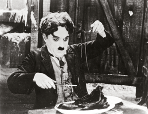
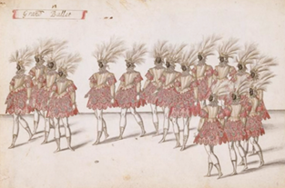
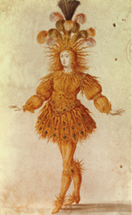

Danças da Corte, comuns durante os séculos XIV e XV. LANCRET, Nicolas. La Camargo Dancing , c . 1730. óleo sobre tela, 76,2 × 106,7 cm. Galeria Nacional de Arte, Washington.
Galeria Nacional de Arte, Washington
Desde o Renascimento, artistas na Itália e na França se preocuparam com o desenvolvimento de formas de expressão cênicas voltadas para diversão e socialização. Na Itália, a partir do século XV, a Commedia dell’Arte ganhou destaque como um teatro popular, com artistas de grande domínio técnico e personagens-tipo. Na França, entre os séculos XIV e XV, a dança se destacou na vida social da Corte e da alta sociedade com manifestações como os balés de Corte, os bailes de máscaras e o “Balé cômico da rainha” (1581).
Essas manifestações ocorreram ao mesmo tempo que, nas outras linguagens artísticas, se desenvolviam os elementos renascentistas e barrocos. Tanto no teatro quanto na dança, os acontecimentos desse período contribuíram para a profissionalização dos artistas.
Este capítulo examina o desenvolvimento do teatro e da dança entre os séculos XVI e XVII, destacando os estilos e as contribuições para a arte, inclusive até os dias atuais.
Neste capítulo serão abordadas as habilidades EM13LGG601, EM13LGG602, EM13LGG603 e EM13LGG604.
Os protagonistas do filme O Auto da Compadecida (2000, dirigido por Guel Arraes), interpretados por Selton Mello, à esquerda, e Matheus Nachtergaele, à direita.
Nelson Di Rago/TV Globo
GRUND, Norbert Joseph Carl. Scene from Commedia dell‘Arte , c . 1760. Óleo sobre madeira, 32 x 26 cm. Mosteiro de Strahov, Praga.
Ablakok (CC BY-SA 4.0)/Wikimedia Commons/Mosteiro de Strahov, Praga
A Commedia dell’Arte e os primeiros atores profissionais
A Commedia dell’Arte surgiu na Itália em meados do século XV, como uma forma de teatro popular, tendo o improviso como um de seus elementos estruturais. Essas apresentações teatrais eram realizadas em palcos montados nas ruas e praças das cidades.
As trupes de artistas eram herdeiras dos mimos romanos ambulantes que sobreviveram ao período medieval. Esse tipo de comédia era fortemente impulsionado pelos cortejos mascarados com histórias que apresentavam sátira social e eram incrementadas com música, cantos, números acrobáticos e pantomimas
MIEL, Jan. Atores de Commedia dell’Arte chegando a uma cidade, 1640. Óleo sobre tela. 55,1 x 80 cm. Coleção particular.
The Picture Art Collection/Alamy/Fotoarena/Coleção particular
No antigo teatro greco--romano, os mimos eram uma espécie de teatro popular, composto também de danças e jogos, nos quais se faziam imitações de caracteres e costumes de época. Sua temática, portanto, é invariavelmente a vida cotidiana. O ator é um imitador (do grego, “ mimos ”; do latim, “ mimus ”) dos gestos, comportamentos típicos ou formas de linguagem já conhecidas previamente pelo público, cujo objetivo era, de forma geral, provocar o riso.
Em meados dos séculos XVI e XVII, a Commedia dell’Arte já havia se estabelecido no cenário cultural da Europa, e as companhias itinerantes, de estrutura familiar, viajavam pela Itália em carroças que, muitas vezes, se transformavam em pequenos palcos e em espaços cênicos para as apresentações.
Como não havia um texto previamente escrito, os atores seguiam um roteiro ( canovaccio ) com as principais situações que deveriam acontecer e tinham liberdade para improvisar e interagir com o público. Dessa forma, esse tipo de comédia se opunha à Commedia erudita , própria do teatro literário dos humanistas, na qual os atores recitavam textos em latim e não interagiam com o público.
Cada ator representava apenas um personagem-tipo e desempenhava uma série de “números” previamente ensaiados ( lazzi ), que poderiam ser aproveitados ou adaptados conforme a situação, o que tornava as apresentações dinâmicas e envolventes. Os atores surpreendiam o público com a capacidade de improviso e sabiam aproveitar os momentos cômicos e as situações locais para provocar o riso e empolgar o público.
Além das situações cômicas, a sátira social foi outra inovação da Commedia dell’Arte , em que se exploravam os conflitos humanos e a ironia aos costumes, especialmente dos tipos sociais poderosos.
Commedia erudita é um tipo de comédia que se desenvolveu na Itália durante o Renascimento e que tinha por fundamento a imitação das comédias clássicas gregas e latinas, sobretudo as de Terêncio, Plauto e até mesmo Sêneca, realizadas pelos humanistas eruditos.
Embora cada companhia tivesse personagens com nomes diferentes, estes apresentavam as mesmas características predefinidas. As trupes dell’Arte eram formadas por grupos de 10 a 12 artistas que exploravam, ao limite, as características físicas e as habilidades cômicas de seus personagens-tipo: o ingênuo, o soldado covarde, o criado astuto, o velho sovina, entre outros.
Entre os tipos mais conhecidos, que chegaram até os dias atuais, destacam-se o Arlequim, a Colombina e o Pierrô. Os três fazem o papel de empregados que formam um triângulo amoroso e estão sempre envolvidos em trapaças e trapalhadas. Outros personagens são essenciais aos enredos cheios de ação, artimanhas, trapaças e comicidade, como o jovem herói, os patrões, os jovens apaixonados, os médicos, os oficiais covardes e outros bufões.
As peças de Commedia dell’Arte tratavam de encontros e desencontros amorosos, com um inesperado final feliz promovido pelos empregados.
Os personagens representam três categorias:
SAND, Maurice. Personagem bufão da Commedia dell’Arte (Pantaleão). In : Masques et bouffons (Comedie Italienne) . Paris: Michel Levy Freres, 1860. Biblioteca de Artes Decorativas, Paris.
Maurice Sand. In: Masques et bouffons (Comedie Italienne). Paris: Michel Levy Freres, 1860. Biblioteca de Artes Decorativas, Paris
Há também Brighela, astuto e egoísta, trapaceiro que trabalha para Pantalone; Pierrôt ou Pedrollino, ingênuo e fiel, que se envolve em confusão, geralmente, conduzido por Arlequino; Punch ou Pulcinella, servo astuto e corcunda; Colombina, empregada esperta, apaixonada por Arlequim.
Uma das marcas de caracterização e reconhecimento dos personagens da Commedia dell’Arte é a máscara, que oculta a parte superior da face e deixa o maxilar descoberto. Com isso, o ator não só melhora sua dicção como respira com facilidade.
A Commedia dell’Arte sofreu lento declínio durante o século XVIII;contudo, seus elementos alimentaram outros estilos de comédia e seus personagens permanecem vivos no teatro, no cinema e na animação atuais. Além disso, o legado da Commedia dell’Arte para o ator foi fundamental, tanto em técnica e especialização cênica quanto em sua profissionalização.
Por dentro da arte
O improviso e a agilidade burlesca , com trejeitos corporais marcantes, e o repertório de piadas e truques da Commedia dell’Arte se mantêm, até hoje, como uma das principais referências dos atores cômicos.
O Vagabundo ( The Tramp , em inglês), um dos principais personagens do ator Charlie Chaplin – conhecido como Charlot, na França, e como Carlitos, no Brasil e na Argentina –, é um exemplo dessa influência.
Chaplin usa a técnica dos lazzi e a combinação do personagem--tipo zanni , que representa a classe baixa e está sempre envolvido em situações atrapalhadas e cômicas. Carlitos, assim como o Pierrô, tem a personalidade gentil e ingênua, a ponto de cozinhar e comer um sapato, como se fosse um filé. Ele come até um cadarço como se fosse macarrão.
O Vagabundo, ou Carlitos, o personagem de Charlie Chaplin, em cena do filme Em busca do ouro , 1925.
Granger/Shutterstock.com
Um exemplo contemporâneo da influência da Commedia dell’Arte são os personagens de Os Simpsons . Na animação criada pelo norte--americano Matt Groenaing, com estreia em 1989, os personagens apresentam as características de personagem-tipo.
Analisando a Commediadell’Arte na atualidade
Mãos à obra
Em grupos, vocês vão elaborar máscaras da Commedia dell’Arte com a técnica da papelagem ou papietagem.
Materiais
Procedimento
A máscara pode ser usada na caracterização de um personagem ou apresentada em uma exposição da turma.a
Danças da Corte e diversão
Na França, a partir do fim do século XVI, criou-se uma forma de teatro voltada à Corte e à alta sociedade: o balé de Corte, ou ballet de cour, que tinha como base uma ação dramática que unia – em um grande espetáculo ao mesmo tempo erudito e agradável, sóbrio e divertido – poesia, música, canto, dança, pintura, cenários, maquinaria, entre outras artes e artifícios.
Nessa complexa composição, a dança ocupava posição de destaque.
Os balés de Corte eram realizados predominantemente no ambiente da Corte e em reverência ao rei. Contavam com cortesãos, príncipes e o próprio rei, que participavam da elaboração das coreografias, dançavam e desempenhavam diversos papéis. Essas danças se estenderam do Renascimento ao Barroco e influenciaram as danças de salão por toda a Europa.
RABEL, Daniel. Ballet des Fées de la forêt de Saint Germain ; “Le Grand ballet”; quatorze figures. Séc. XVII. Aquarela. Museu do Louvre, Paris.
Museu do Louvre, Paris
Balé de Corte e bailes de máscaras
Muitas danças foram criadas para os balés de Corte, como a pavana e a galharda. A pavana era uma dança lenta em que casais circulavam pelo salão quase em procissão. O movimento básico da pavana eram passos à frente e atrás. A galharda foi criada como complemento à pavana e tinha movimentos mais rápidos, passos improvisados e saltos.
... nas Cortes da Renascença, o processo de sofisticação da dança foi crescente e continuou durante todo o período Barroco. Quando a italiana Catarina de Médici (1519-1589) foi para a França, a fim de se casar com o duque de Orléans, que seria o futuro Henrique II (1519-1559), e se tornar rainha, levou um grupo de músicos, dançarinos e coreógrafos da Corte de Florença. Os balés da Corte francesa logo ganharam fama e influenciaram a formação de outros grupos de dança em outras Cortes.
Na França, a realeza considerava a arte, especialmente os suntuosos balés de Corte, como um modo privilegiado de propaganda política e de demonstração da sofisticação e do poder real.
Havia dançarinos especializados em se apresentar para a Corte. Assim, surgiram tratados de dança, com a descrição de passos e movimentos que exigiam muito treino e habilidade técnica. No século XVI, surgiram as escolas de dança, e os bailarinos se profissionalizaram.
Os balés apresentavam coreografias com passos que exigiam muito treino. Vistas do alto, as danças formavam figuras geométricas nitidamente identificáveis, como círculo, quadrado, losango e retângulo.
Durante a segunda metade do século XVII, no reinado de Luís XIV (1638-1715), a França viveu um grande desenvolvimento na dança, especialmente porque o rei a apreciava e gostava de dançar e participar de luxuosas apresentações. Ele pretendia criar uma França poderosa econômica e culturalmente e apoiava fortemente o desenvolvimento da música, do teatro e da dança, tornando-os referência para a Europa. Luís XIV fundou, em 1661, a Academia Real de Dança (em francês, Académie Royale de Danse ), cujo objetivo era normatizar o ensino e a prática da dança nacional.
Luís XIV ficou conhecido como “Rei-Sol” por ter desempenhado esse papel no Ballet de la Nuit , quando tinha 15 anos. Ao longo da vida, o rei protagonizou mais de 20 balés. Protegeu e apoiou muitos artistas que atendiam seu gosto artístico.
Luís XIV com figurino do personagem “Rei-Sol” no Ballet de la Nuit (1653).
AKG-Images/Album/Fotoarena/Biblioteca Nacional da França, Paris
Jean-Baptiste Lully (1632-1687) foi compositor da Corte francesa, elaborando músicas especialmente para o rei dançar e, com o dramaturgo Molière (1622-1673), criou o balé-comédia, um gênero dramático e musical coreografado que atendia o desejo do rei em satirizar os costumes da época e a religião.
Além deles, Charles-Louis-Pierre de Beauchamps (1631-1705) criou coreografias para o balé-comédia e elaborou técnicas de dança clássica, definindo as cinco posições básicas do balé, usadas atualmente. Guillaume-Louis Pécour (1653-1729) também contribuiu muito para o balé, inventando novas técnicas que eram um desafio para os bailarinos, mas que dominaram o palco por todo o século XVIII. Como diretores da Académie Royale de Danse , Pierre de Beauchamps e Guillaume Pécour foram os principais responsáveis pelo desenvolvimento da dança na França, durante o século XVII.
Desse modo, a dança tornou-se uma profissão, e os espetáculos foram transferidos dos salões para os teatros. No início, os balés tinham apenas homens, que também interpretavam os papéis femininos. Porém, no final do século XVII, a Academia de Dança passou a formar bailarinas, que ganharam destaque, apesar de terem os movimentos limitados pelos complicados figurinos.
Na Corte de Luís XIV, as mulheres usavam roupas compridas e pesadas que chegavam a cobrir os pés, sendo impossível saltar com esse traje, exigindo aparelhos específicos para erguer as bailarinas do chão. Em 1721, uma bailarina chamada Camargo ousou saltar pela primeira vez, provocando um enorme escândalo, pois, para saltar, ela encurtou a saia, deixando seus pés visíveis para o público.
Com a Revolução Francesa, uma modista da ópera francesa inventou a malha, que foi aceita até pelo papa, desde que fosse azul para não lembrar a cor da pele. Em meio a coreografias com características burlescas e mitológicas do balé de Corte, eram feitas apresentações em que desfilavam animais, como elefantes e camelos. Havia também danças em que os bailarinos usavam máscaras para esconder a face, interpretar personagens e se divertir.
O balé de Corte, que ficou famoso com Luís XIV, continuou a prosperar durante os reinados de Luís XV e Luís XVI. No final do século XIX, a dança aproximou-se do formato atual do balé clássico.
1
Fadesp Na Idade Média, o teatro, mesmo contribuindo para a catequização, foi expulso de dentro das igrejas e foi para as ruas, praças e estradas. Nesse período, surge o embrião de uma prática teatral que florescerá plenamente no Renascimento, mais especificamente na Itália, e que, ainda hoje, é considerada a grande manifestação da competência do teatro popular, pela destreza corporal de seus intérpretes e por seu domínio improvisacional. Esse fenômeno teatral é conhecido como
- triunfos.
- cortejos.
- teatro de rua.
- Commedia dell’Arte.
2
Descreva as características do balé de Corte, ou balletde cour.
3
Comente sobre as roupas usadas para dançar balé entre os séculos XIV e XVIII.
Consolidando saberes
1
Ufal 2017 Durante três séculos, a Commedia dell’Arte fascinou o público destacando-se por apresentar um teatro que requeria um grande desempenho dos atores tanto na parte prática quanto em conhecimento. Sobre suas características, assinale a alternativa correta.
- As máscaras utilizadas eram Pantaleão – velho avarento apaixonado pelas jovens; Doutor – médico ou advogado; Arlequim – uma figura desconhecida; Capitão – militar fanfarrão; entre outros.
- Na apresentação, os atores seguiam os canevas que continham apenas os fatos principais; oportunizavam, assim, a criação, por meio de improvisação.
- Cada personagem apresentava traços de caráter e de comportamento de forma contrária às máscaras que usavam.
- As companhias de Commedia dell’Arte começaram a se formar na França.
- A herança da Commedia dell’Arte não reflete na atualidade.
2
Pref. Rio de Janeiro 2016 O universo popular dos cordelistas, dos mamulengos, da linguagem dos folguedos como o reisado e o bumba-meu-boi, está presente na obra de Suassuna, somado a influências do teatro religioso medieval e das tradições da Commedia dell’Arte.
Chicó e João Grilo são os personagens principais da trama O Auto da Compadecida e são os chamados “amarelinhos”. Eles ludibriam seus patrões, usam de esperteza para angariarem vantagens, da mesma forma como os criados da Commedia dell’Arte :
- Pantalone e Dottore.
- Arlecchino e Brighela.
- Pulcinella e Francatripa.
- Scaramuccia e Capitano.
3
A Académie Royale de Danse foi muito importante para o desenvolvimento dessa arte durante o século XVII. Ela foi fundada a pedido do rei Luís XIV, da França, e o resultado mais significativo da academia se deveu ao trabalho individual de dois de seus diretores:
- Charles de Gaulle e Molière.
- Pierre de Beauchamps e Guillaume Pécour.
- Marius Petipa e Molière.
- Molière e Marius Petipa.
- Lully e Marius Petipa.